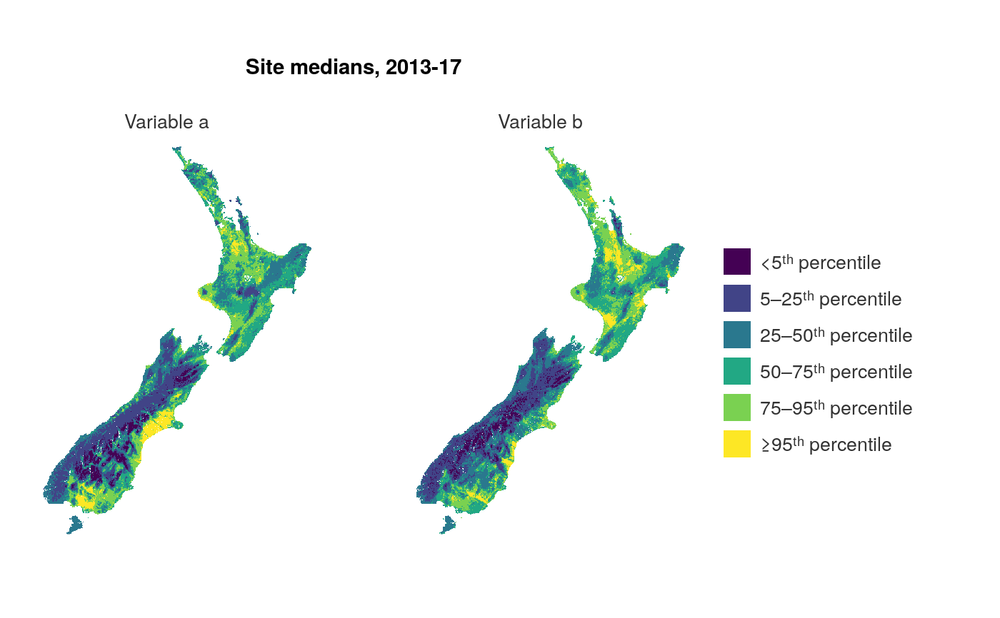

R/ggplot_stars_fun.R
ggplot_stars_col_facet.RdMap of an array in ggplot that is coloured and facetted.
ggplot_stars_col_facet(data, col_method = "quantile", col_quantile_by_facet = TRUE, col_cuts = NULL, pal = NULL, pal_rev = FALSE, coastline = NULL, coastline_behind = TRUE, coastline_pal = "#7f7f7f", facet_nrow = NULL, legend_ncol = 3, legend_digits = 1, title = "[Title]", subtitle = NULL, col_title = "", caption = NULL, legend_labels = NULL, font_family = "Helvetica", font_size_title = NULL, font_size_body = NULL, wrap_title = 70, wrap_subtitle = 80, wrap_col_title = 25, wrap_caption = 80)
| data | A stars object with 2 dimensions, x and y, and multiple named attribute layers with usual convention of lower case and underscores. Each attribute layer will be a facet. Required input. |
|---|---|
| col_method | The method of colouring features, either "bin", "quantile" or "category." Defaults to "quantile". Note all numeric variables are cut to be inclusive of the min in the range, and exclusive of the max in the range (except for the final bucket which includes the highest value). |
| col_quantile_by_facet | TRUE of FALSE whether quantiles should be calculated for each group of the facet variable. Defaults to TRUE. |
| col_cuts | A vector of cuts to colour a numeric variable. If "bin" is selected, the first number in the vector should be either -Inf or 0, and the final number Inf. If "quantile" is selected, the first number in the vector should be 0 and the final number should be 1. Defaults to quartiles. |
| pal | Character vector of hex codes, or provided objects with pal_ prefixes. Defaults to viridis. |
| pal_rev | Reverses the palette. Defaults to FALSE. |
| coastline | Add a sf object as a coastline (or administrative boundaries). Defaults to NULL. Use nz (or nz_region) to add a new zealand coastline. Or add a custom sf object. |
| coastline_behind | TRUE or FALSE as to whether the coastline is to be behind the stars object defined in the data argument. Defaults to FALSE. |
| coastline_pal | Colour of the coastline. Defaults to "#7F7F7F". |
| facet_nrow | The number of rows of facetted plots. |
| legend_ncol | The number of columns in the legend. |
| legend_digits | Select the appropriate number of decimal places for numeric variable auto legend labels. Defaults to 1. |
| title | Title string. Defaults to "[Title]". |
| subtitle | Subtitle string. Defaults to "[Subtitle]". |
| col_title | Colour title string for the legend. Defaults to NULL. |
| caption | Caption title string. Defaults to NULL. |
| legend_labels | A vector of manual legend label values. Defaults to NULL, which results in automatic labels. |
| font_family | Font family to use. Defaults to "Helvetica". |
| font_size_title | Font size for the title text. Defaults to 11. |
| font_size_body | Font size for all text other than the title. Defaults to 10. |
| wrap_title | Number of characters to wrap the title to. Defaults to 70. |
| wrap_subtitle | Number of characters to wrap the subtitle to. Defaults to 80. |
| wrap_col_title | Number of characters to wrap the colour title to. Defaults to 25. |
| wrap_caption | Number of characters to wrap the caption to. Defaults to 80. |
A ggplot object.
map_data1 <- example_stars_nz_no3n %>% rlang::set_names("Nitrate nitrogen") map_data2 <- example_stars_nz_drp %>% rlang::set_names("Dissolved reactive phosphorus") map_data <- c(map_data1, map_data2) ggplot_stars_col_facet(data = map_data, coastline = nz, col_method = "quantile", col_cuts = c(0, 0.05, 0.25, 0.5, 0.75, 0.95, 1), title = "River modelled nutrient concentrations, 2013-17")#> Warning: Removed 711534 rows containing missing values (geom_raster).